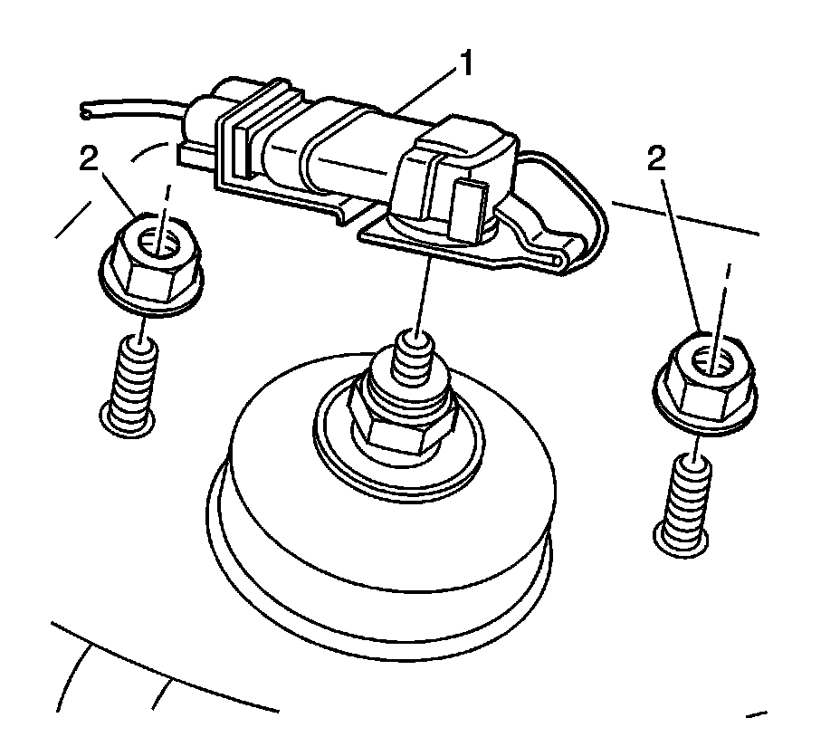
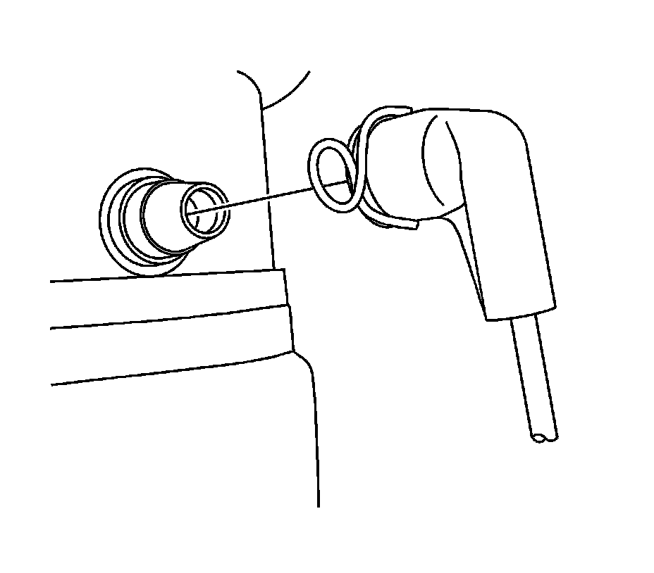
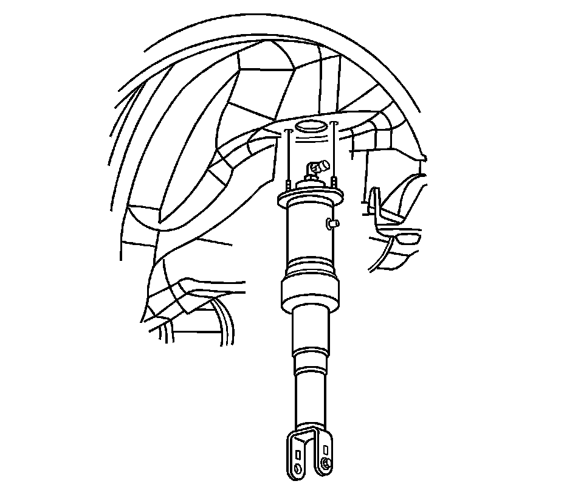

Shock Absorber Replacement
Shock Absorber Replacement
Removal Procedure

1. Remove the trim panel.
2. Move the sound insulator away from the shock tower.
3. Disconnect the electrical connector (1) for the F55 suspension, if equipped.
4. Remove the upper shock mounting nuts (2).
5. Raise and support the vehicle. Refer to Lifting and Jacking the Vehicle (Service and Repair) .

6. Disconnect the automatic level control air line from the shock for F55 suspension, if needed.

7. Remove the lower shock mounting bolt.

8. Remove the shock from the vehicle.
Installation Procedure
1. Install the shock to the vehicle.
Notice: Refer to Fastener Notice (Fastener Notice) .
2. Install the lower shock mounting bolt.
Tighten the bolt to 150 N.m (111 lb ft).
3. Connect the automatic level control air line to the shock for the F55 suspension, if needed.
4. Guide the shock to the body while lowering the vehicle.
5. Install the upper shock mounting nuts (2).
Tighten the nuts to 25 N.m (18 lb ft).
6. Connect the electrical connector (1) for the F55 suspension, if needed.
7. Reposition the sound insulator around the shock tower.
8. Install the trim panel.